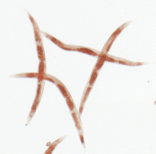
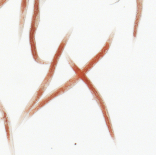

Broad Bioimage Benchmark Collection
Annotated biological image sets for testing and validation
C. elegans metabolism assay
Accession number BBBC011 · Version 1
Example images
-
Negative control: wild type
-
Positive control: fat
Biological application
Images are controls from an RNA interference screen for genes affecting fat mass in the nematode C.elegans. The animals are stained with oil red O, a non-flourescentdye which stains all major C elegans fat storage organs, including intenstine, hypodermis, gonad and eggs.
Negative controls, treated with an empty vector (L4440) display the wild-type phenotype: fat accumulates in portions of the intenstine and in the eggs. Positive controls, treated with RNAi against the insulin receptor (daf-2) display an increased fat phenotype; fat accumulates more homogeneously throughout the animal's intestine and is evident in the hypodermis as well as in the eggs.
For more information see O'Rourke et al. (Cell Metabolism, 2009).
Images
Six images per well per channel (brightfield) were acquired at the Massachusetts General Hospital (MGH) on an upgraded (Biovision Inc.) Axioscope Microscope (Zeiss) using Surveyor software (Bivision Inc.). Original image size is 2674x3078 pixels, but for our analysis we scaled the images down to 691 x 770 pixels. Images are available in 8-bit PNG.
Ground truth B
The images provided correspond to one replicate of the controls embedded in the metabolism screen (negative, L4440, and positive, daf-2). L4440 images are in the folder entitled "L4440_rep1" and daf-2 images are in the folder entitled "daf-2_rep1".
For more information
These images were originally acquired as part of a screen for fat regulators in C elegans in Gary Ruvkun's lab at MGH. Please contact Eyleen J. O'Rourke (eorourke AT molbio.mgh.harvard.edu) for more information.
Published results using this image set
| False discovery rate | Citation |
|---|---|
| 4.5% | Wählby et al., Nat Meth, 2012 |
Recommended citation
"We used image set BBBC011v1 provided by Gary Ruvkun, available from the Broad Bioimage Benchmark Collection [Ljosa et al., Nature Methods, 2012]."